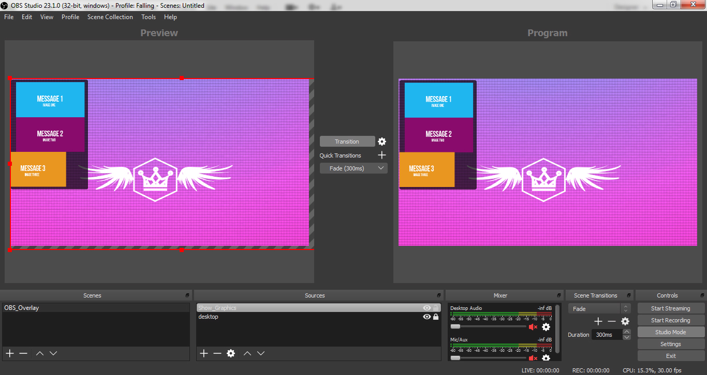

OBS Overlay - Image Pop-up
About
This OBS overlay is showing 3 images animated with help of CSS3
Digital pack comes with 5 versions using different animations
No external resources required (browser-based local file and images provided)
Available versions
How to install
Install process is pretty simple and does not require extensive skills
For best performance please follow the steps below:
Step 4
Optional, you can play with Transition and Fade Transition options when triggering this overlay, it is up to you.
Note
- the overlays are not interactive, not triggered by tips.
- all editing process is made via source code
- all resources run locally from your device (desktop/laptop)
- the overlay is triggered manually by the model
- overlay developed for Chaturbate webcam performers.
Change images
You can replace default images inside images folder
Your images should have the same name, same format (jpeg) and same width and height.
If you have experience with editing the source markup, open the .html file in your fav. editor and replace the image url path with your own graphics